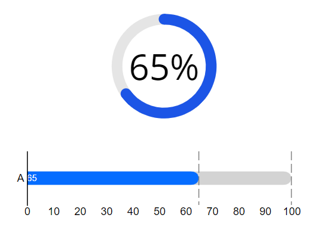
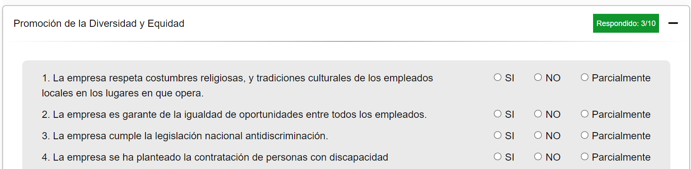

Obtén el nivel de integración de prácticas de RSE.
La mejor manera para mejorar el nivel de
integración de conceptos de RSE de tu negocio es
conocer como está tu desempeño en las distintas dimensiones
de la sustentabilidad.
El nivel de integración es un índice entre un rango de 0 a 100,
siendo los valores cercanos a 100 los resultados más óptimos.

Ejemplo de preguntas.
Todas las preguntas tendrán tres opciones si, no,
parcialmente, siendo “si” la opción más optima,
“no” opción mas baja y “parcialmente” opción media.
DERECHOS HUMANOS
Ver preguntas
CUESTIONES RELATIVAS AL CONSUMIDOR
Ver preguntas
PRÁCTICAS DE TRABAJO
Ver preguntas
RELACIÓN CON LA COMUNIDAD Y PARTICIPACIÓN EN SU DESARROLLO
Ver preguntas

MEDIO AMBIENTE
Ver preguntas
